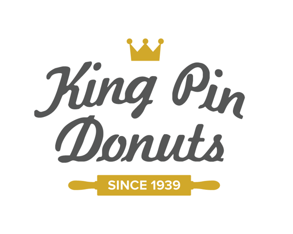
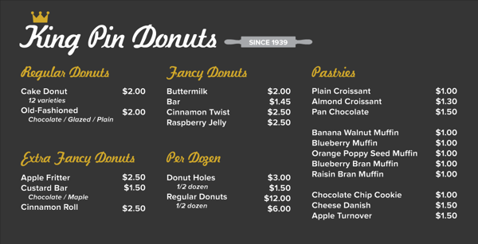
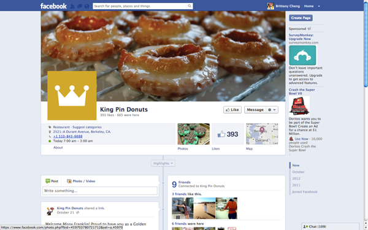
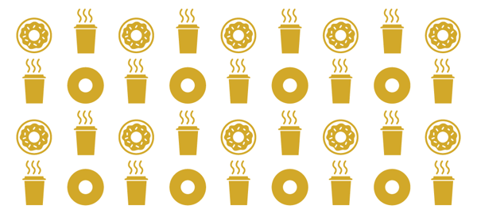
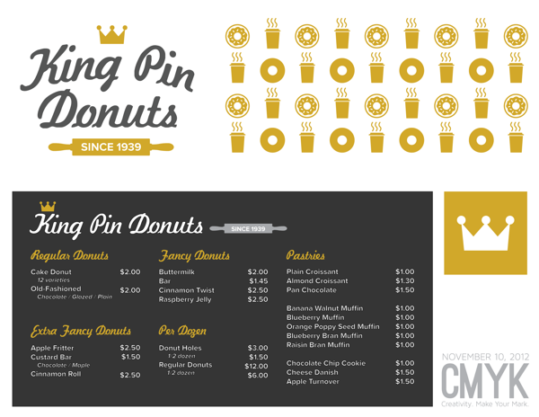

Created during the CMYK Designathon on November 10, 2012, a design competition hosted by Berkeley's graphic design club, Innovative Design. We were tasked with creating new identities for local Berkeley businesses. My partner Justin Wang and I chose to rebrand King Pin Donuts. Below are the design specifications we were given for the four-hour competition.
Logo:
King Pin wants to clean up their current logo (Photo Gallery of Existing Branding: http://tinyurl.com/king-pin-photos). They're looking for a more modern look that is preferably based off the current logo. Currently, their logo is a rolling pin dressed as a king. They feel as though the king does not clearly resemble a rolling pin. Although they like their current logo, they are also up for new creative ideas.
Menu: (47 in by 92 in)
King Pin is very open to new designs for their menu. They are planning on keeping the neon lights on the top of the menu. Try to use the same colors as the current drink menu because they may be updating the pastry menu.
Facebook Cover Photo: (851px by 315px)
King Pin is looking for a cover photo that is low maintenance (does not need to be updated).
Front Panels: (70 in by 32 in)
King Pin wants a modern design for their front panels in the entranceway.
Programs Used: Adobe Photoshop and Illustrator. Typefaces Used: Kavaler Kursive and Proxima Nova.
After much experimentation with the crown and rolling pin, both key aspects of the King Pin brand, we came up with this logo, which emphasizes the "classic" brand (King Pin has been a Berkeley staple since 1939!), while introducing modern, clean, and consistent typography and iconography.

We wanted the menu to be consistent with the logo design, so it uses the same typography, colors, and iconography. (Note: not actual pricing)

For King Pin's identity on Facebook, we wanted to emphasize the product, so we chose a cover photo that displayed delicious donuts. For the profile picture, we chose a minimal logo that emphasizes the crown icon, simplifying the page, though the full logo (first design) could also be used in its place. This crown icon could also be used as a sticker for donut packaging or elsewhere as part of King Pin's branding strategy.

In keeping with our "flat and minimalist" design ethos, we employed heavy used of flat iconography for the front panels, which would be placed on the low walls in front of the store. We chose icons depicting donuts and coffee, King Pin's main product. We kept the coloring consistent with the logo and menu designs.

An artboard depicting the various aspects of our rebranding solution. We were awarded 2nd place from the judges for our consistent and clean redesign.
